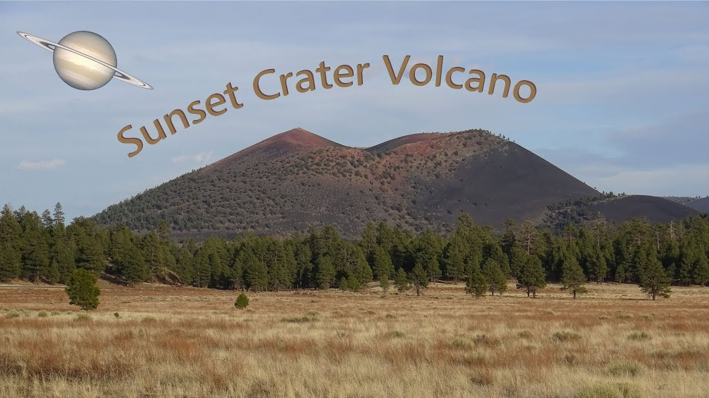
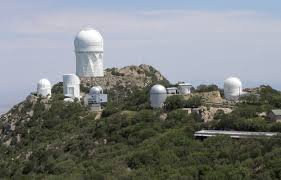

There are a bunch of activities you can do in Flasgstaff.
One of the activities is the acorn drop. The acorn drop happens on New Years Eve. It's just like the New Years ball drop in New Year Square, but with an acorn.
Sunset Crater is one of the best places you can go in Flag. If you ever get the chance to go, go see it because it's extrodinary, as well as the view. It's a volcano that hasn't erupted since 1085 A.D. It's a beautiful place to go.
This labatory is an Astronmy Labatory. You can see Jupiter's moon's, Pluto, and more with it. The Atronmer's there tell you the names of stars, the names of Jupiter's moon's, and more. It's a really cool place to go to if you get the chnace to.
Next »